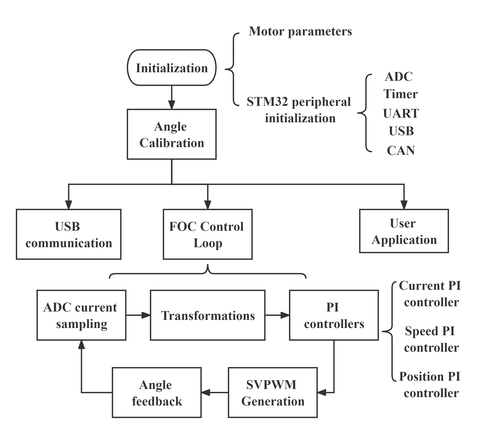

Introduction
This library is designed to support the MsterFOC Dual Motor control board. The whole project is the Final Year Project of Zexing Zhao (Alfred John).
Functions provided including:
- Encoder angle feedback functions of Photoelectric encoders, PWM encoders, and I2C encoders.
- ADC phase current sampling, filtering, and current reconstruction function.
- Rotor angle calibration function.
- Coordinate Transformation functions consisting Clarke, Park transformation and their inverse forms.
- SVPWM calculation function.
- PID functions with anti-integral saturation and output limiting features.
- FOC open loop functions.
- FOC close loop functions including current, speed and position mode.
- Serial port data feedback functions.
- Control mode selection function.
- User application functions.
- Specifically, double motor operation functions including dual motor drag control function, force feedback function, and multiple gear switching function.
Table of Contents
- Library Sructure
- Users Guide
- The overall logic was demonstrated as,

- Updating...